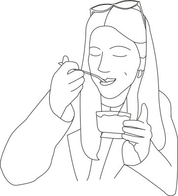
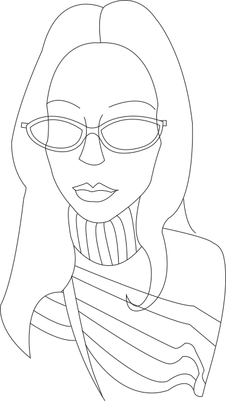
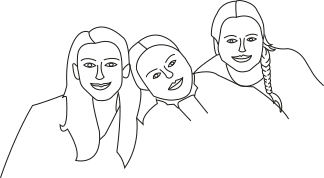

HejHej!
My name is Linn Petersson
I'm a UX/UI Web Designer originally from Växjö but now based in Malmö. I'm currently in my final semester at Malmö University, studying for a Bachelor's degree in Web Design and Web Development. Right now, I'm on the hunt for an internship where I can both develop my current skills and contribute my work to your team! Hope to hear from you! If you haven't had enough of me yet, you can check out my CV below, otherwise, feel free to jump straight to contact.
Skills
Figma
Photoshop
Illustrator
InDesign
HTML
CSS
JS
Language Proficiancy
Swedish
English


Relevant Courses
What have i studied
Throughout my studies, I've built a strong foundation in both UI/UX design and web development. My design courses have taught me to create user-centered solutions using tools like Figma, from initial sketches and wireframes to polished final designs. I've also studied graphic design, gaining proficiency in Adobe's creative suite. While I'm primarily focused on design, I believe that understanding code is essential for effective collaboration with developers. That's why I've also studied HTML, CSS, and JavaScript.
Courses in UX/UI design
Interaktionsdesign / Interaction design
Crossmedia projekt
Designstudio
Grafisk design / Graphic design
Courses in development
Digital utveckling 1 / Digital development 1
Digital utveckling 2 / Digital development 2
Digital utveckling 3 / Digital development 3
Linn @ home
Who am i ?
I moved to Malmö three years ago to start my studies at Malmö University, and I’ve really come to enjoy life here, especially thanks to the amazing friends I’ve met along the way. In my free time, I love spending time with friends, enjoying good food, and going out for a fika. When I’m on my own, I like to read, watch films or series, and play games, both digital and analog.
I’m a very curious and driven person who enjoys learning new things and is highly motivated to develop my design skills. To do this, I work on smaller creative projects in my spare time for friends and family.
As I approach graduation, I’m excited to take my first steps into professional life. It feels a bit scary, but also incredibly exciting. Right now, I’m primarily looking for an internship where I can continue to grow, while also contributing with real value and support to your team.
